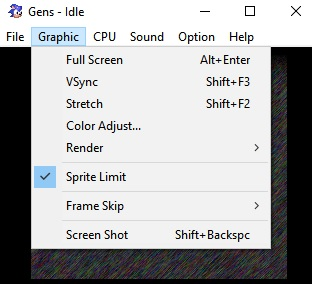
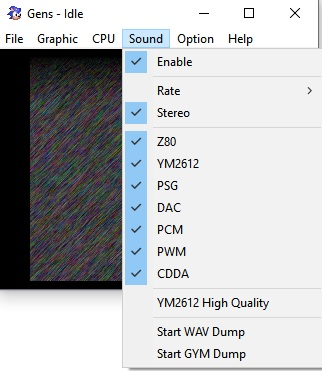

По открытии приложения наблюдается пустая рабочая область.
Изображение создано или открыто.
Доступны все возможные файловые операции из меню «Файл».
Доступны графические настройки (во весь экран, растянуть, включить VSync и т.д.).
Можно изменить настройки звука, чип Yamaha YM612.
